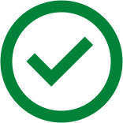

<ion-header>
  <ion-grid class="ion-no-padding">
    <ion-row class="black-bar"></ion-row>
    <ion-row class="blue-bar"></ion-row>
  </ion-grid>
</ion-header>

<ion-content padding>
  <div class="tick-icon">
    
  </div>
  <div class="msg-centered">
    <h3>{{message}}</h3>
    <h3 *ngIf="additionalMessage">
      {{additionalMessage}}<span (click)="callSupport()">{{additionalMessageButton}}</span>
    </h3>
  </div>
</ion-content>
<ion-footer class="ion-padding-horizontal">
  <div class="footer-cta-section">
    <ion-button expand="block" (click)="pushPage()" color="secondary">
      <span>Done</span>
    </ion-button>
  </div>
</ion-footer>
